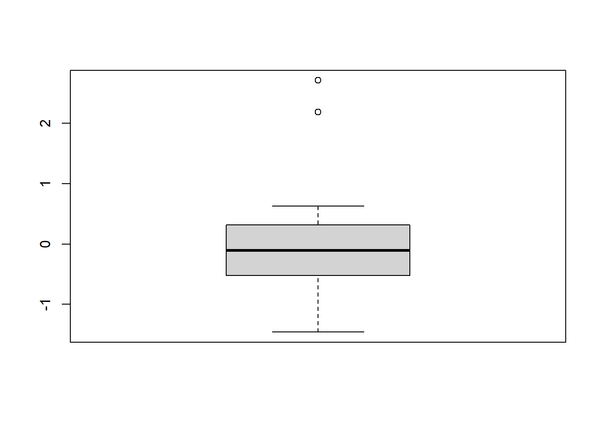
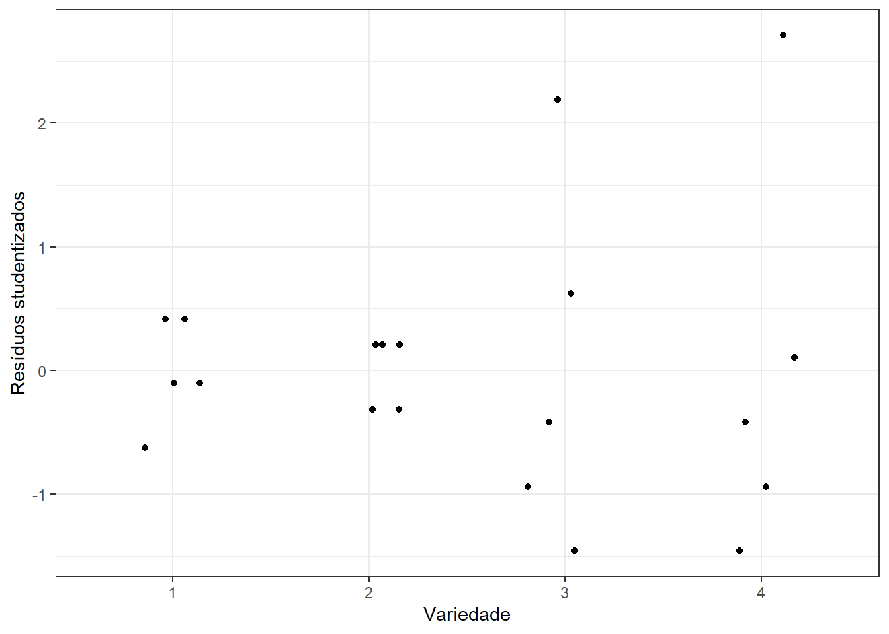
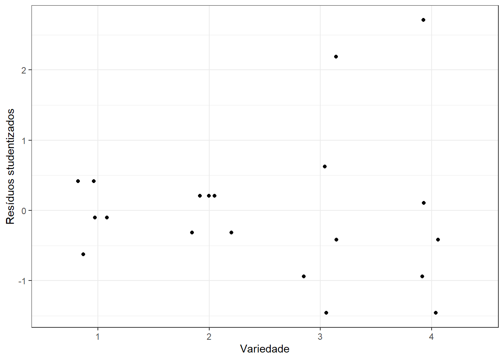
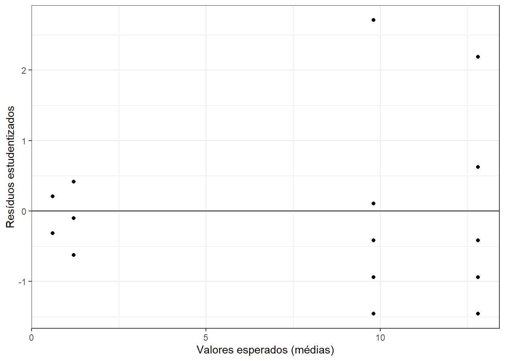
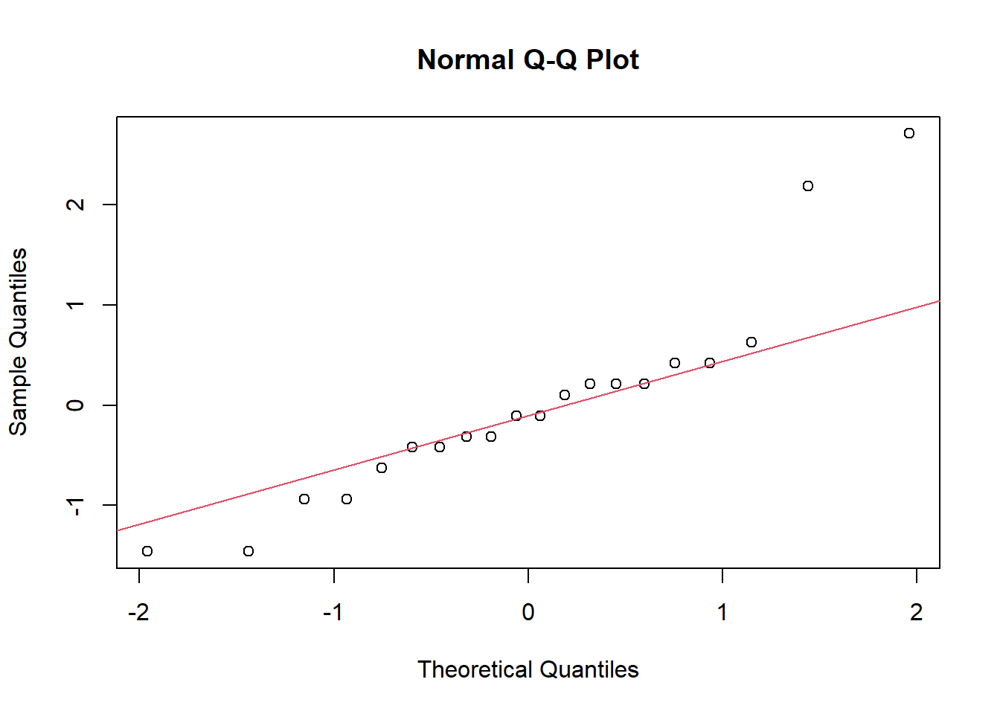
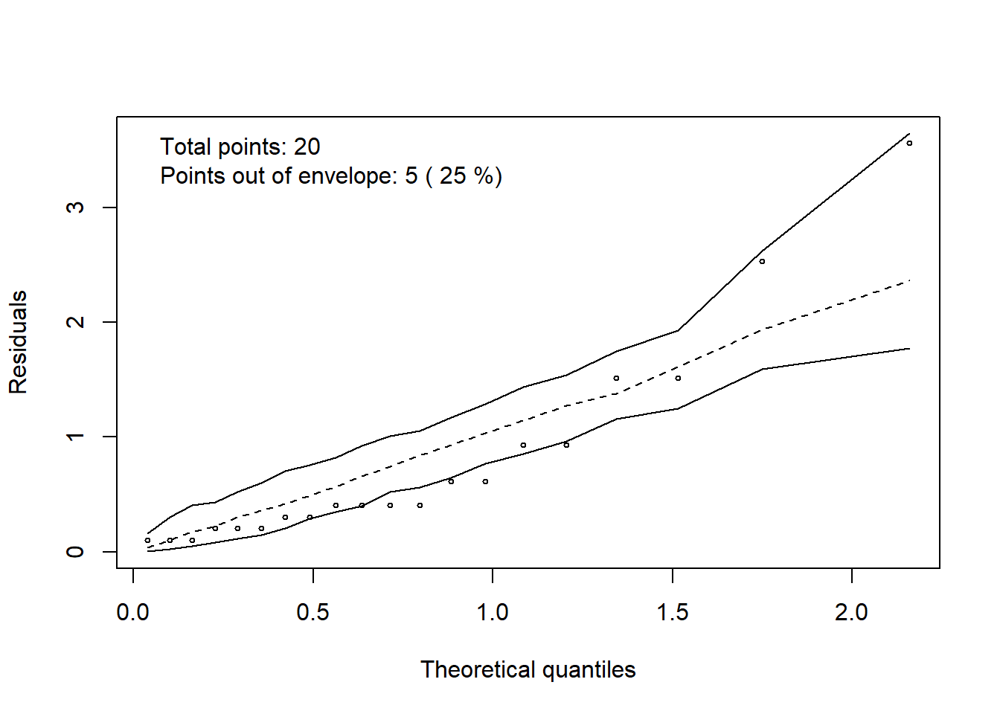
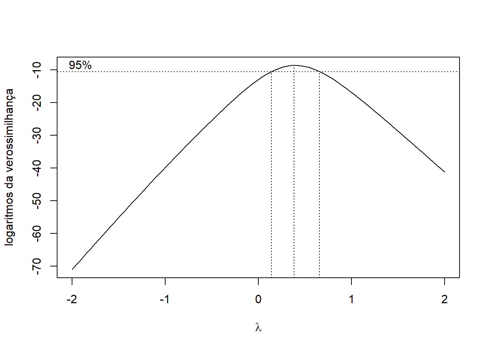

<!DOCTYPE html>

<html>

<head>

<meta charset="utf-8" />
<meta name="generator" content="pandoc" />
<meta http-equiv="X-UA-Compatible" content="IE=EDGE" />


<title>Pressuposições da ANOVA</title>

<script src="site_libs/header-attrs-2.25/header-attrs.js"></script>
<script src="site_libs/jquery-3.6.0/jquery-3.6.0.min.js"></script>
<meta name="viewport" content="width=device-width, initial-scale=1" />
<link href="site_libs/bootstrap-3.3.5/css/flatly.min.css" rel="stylesheet" />
<script src="site_libs/bootstrap-3.3.5/js/bootstrap.min.js"></script>
<script src="site_libs/bootstrap-3.3.5/shim/html5shiv.min.js"></script>
<script src="site_libs/bootstrap-3.3.5/shim/respond.min.js"></script>
<style>h1 {font-size: 34px;}
       h1.title {font-size: 38px;}
       h2 {font-size: 30px;}
       h3 {font-size: 24px;}
       h4 {font-size: 18px;}
       h5 {font-size: 16px;}
       h6 {font-size: 12px;}
       code {color: inherit; background-color: rgba(0, 0, 0, 0.04);}
       pre:not([class]) { background-color: white }</style>
<script src="site_libs/jqueryui-1.13.2/jquery-ui.min.js"></script>
<link href="site_libs/tocify-1.9.1/jquery.tocify.css" rel="stylesheet" />
<script src="site_libs/tocify-1.9.1/jquery.tocify.js"></script>
<script src="site_libs/navigation-1.1/tabsets.js"></script>
<link href="site_libs/highlightjs-9.12.0/default.css" rel="stylesheet" />
<script src="site_libs/highlightjs-9.12.0/highlight.js"></script>

<style type="text/css">
  code{white-space: pre-wrap;}
  span.smallcaps{font-variant: small-caps;}
  span.underline{text-decoration: underline;}
  div.column{display: inline-block; vertical-align: top; width: 50%;}
  div.hanging-indent{margin-left: 1.5em; text-indent: -1.5em;}
  ul.task-list{list-style: none;}
    </style>

<style type="text/css">code{white-space: pre;}</style>
<script type="text/javascript">
if (window.hljs) {
  hljs.configure({languages: []});
  hljs.initHighlightingOnLoad();
  if (document.readyState && document.readyState === "complete") {
    window.setTimeout(function() { hljs.initHighlighting(); }, 0);
  }
}
</script>


<style type = "text/css">
.main-container {
  max-width: 940px;
  margin-left: auto;
  margin-right: auto;
}
img {
  max-width:100%;
}
.tabbed-pane {
  padding-top: 12px;
}
.html-widget {
  margin-bottom: 20px;
}
button.code-folding-btn:focus {
  outline: none;
}
summary {
  display: list-item;
}
details > summary > p:only-child {
  display: inline;
}
pre code {
  padding: 0;
}
</style>


<style type="text/css">
.dropdown-submenu {
  position: relative;
}
.dropdown-submenu>.dropdown-menu {
  top: 0;
  left: 100%;
  margin-top: -6px;
  margin-left: -1px;
  border-radius: 0 6px 6px 6px;
}
.dropdown-submenu:hover>.dropdown-menu {
  display: block;
}
.dropdown-submenu>a:after {
  display: block;
  content: " ";
  float: right;
  width: 0;
  height: 0;
  border-color: transparent;
  border-style: solid;
  border-width: 5px 0 5px 5px;
  border-left-color: #cccccc;
  margin-top: 5px;
  margin-right: -10px;
}
.dropdown-submenu:hover>a:after {
  border-left-color: #adb5bd;
}
.dropdown-submenu.pull-left {
  float: none;
}
.dropdown-submenu.pull-left>.dropdown-menu {
  left: -100%;
  margin-left: 10px;
  border-radius: 6px 0 6px 6px;
}
</style>

<script type="text/javascript">
// manage active state of menu based on current page
$(document).ready(function () {
  // active menu anchor
  href = window.location.pathname
  href = href.substr(href.lastIndexOf('/') + 1)
  if (href === "")
    href = "index.html";
  var menuAnchor = $('a[href="' + href + '"]');

  // mark the anchor link active (and if it's in a dropdown, also mark that active)
  var dropdown = menuAnchor.closest('li.dropdown');
  if (window.bootstrap) { // Bootstrap 4+
    menuAnchor.addClass('active');
    dropdown.find('> .dropdown-toggle').addClass('active');
  } else { // Bootstrap 3
    menuAnchor.parent().addClass('active');
    dropdown.addClass('active');
  }

  // Navbar adjustments
  var navHeight = $(".navbar").first().height() + 15;
  var style = document.createElement('style');
  var pt = "padding-top: " + navHeight + "px; ";
  var mt = "margin-top: -" + navHeight + "px; ";
  var css = "";
  // offset scroll position for anchor links (for fixed navbar)
  for (var i = 1; i <= 6; i++) {
    css += ".section h" + i + "{ " + pt + mt + "}\n";
  }
  style.innerHTML = "body {" + pt + "padding-bottom: 40px; }\n" + css;
  document.head.appendChild(style);
});
</script>

<!-- tabsets -->

<style type="text/css">
.tabset-dropdown > .nav-tabs {
  display: inline-table;
  max-height: 500px;
  min-height: 44px;
  overflow-y: auto;
  border: 1px solid #ddd;
  border-radius: 4px;
}

.tabset-dropdown > .nav-tabs > li.active:before, .tabset-dropdown > .nav-tabs.nav-tabs-open:before {
  content: "\e259";
  font-family: 'Glyphicons Halflings';
  display: inline-block;
  padding: 10px;
  border-right: 1px solid #ddd;
}

.tabset-dropdown > .nav-tabs.nav-tabs-open > li.active:before {
  content: "\e258";
  font-family: 'Glyphicons Halflings';
  border: none;
}

.tabset-dropdown > .nav-tabs > li.active {
  display: block;
}

.tabset-dropdown > .nav-tabs > li > a,
.tabset-dropdown > .nav-tabs > li > a:focus,
.tabset-dropdown > .nav-tabs > li > a:hover {
  border: none;
  display: inline-block;
  border-radius: 4px;
  background-color: transparent;
}

.tabset-dropdown > .nav-tabs.nav-tabs-open > li {
  display: block;
  float: none;
}

.tabset-dropdown > .nav-tabs > li {
  display: none;
}
</style>

<!-- code folding -->


<style type="text/css">

#TOC {
  margin: 25px 0px 20px 0px;
}
@media (max-width: 768px) {
#TOC {
  position: relative;
  width: 100%;
}
}

@media print {
.toc-content {
  /* see https://github.com/w3c/csswg-drafts/issues/4434 */
  float: right;
}
}

.toc-content {
  padding-left: 30px;
  padding-right: 40px;
}

div.main-container {
  max-width: 1200px;
}

div.tocify {
  width: 20%;
  max-width: 260px;
  max-height: 85%;
}

@media (min-width: 768px) and (max-width: 991px) {
  div.tocify {
    width: 25%;
  }
}

@media (max-width: 767px) {
  div.tocify {
    width: 100%;
    max-width: none;
  }
}

.tocify ul, .tocify li {
  line-height: 20px;
}

.tocify-subheader .tocify-item {
  font-size: 0.90em;
}

.tocify .list-group-item {
  border-radius: 0px;
}


</style>


</head>

<body>


<div class="container-fluid main-container">


<!-- setup 3col/9col grid for toc_float and main content  -->
<div class="row">
<div class="col-xs-12 col-sm-4 col-md-3">
<div id="TOC" class="tocify">
</div>
</div>

<div class="toc-content col-xs-12 col-sm-8 col-md-9">


<div class="navbar navbar-default  navbar-fixed-top" role="navigation">
  <div class="container">
    <div class="navbar-header">
      <button type="button" class="navbar-toggle collapsed" data-toggle="collapse" data-bs-toggle="collapse" data-target="#navbar" data-bs-target="#navbar">
        <span class="icon-bar"></span>
        <span class="icon-bar"></span>
        <span class="icon-bar"></span>
      </button>
      <a class="navbar-brand" href="index.html">Estatística experimental</a>
    </div>
    <div id="navbar" class="navbar-collapse collapse">
      <ul class="nav navbar-nav">
        <li>
  <a href="index.html">Sobre</a>
</li>
<li>
  <a href="revisao.html">Revisão</a>
</li>
<li class="dropdown">
  <a href="#" class="dropdown-toggle" data-toggle="dropdown" role="button" data-bs-toggle="dropdown" aria-expanded="false">
    Capítulos
     
    <span class="caret"></span>
  </a>
  <ul class="dropdown-menu" role="menu">
    <li>
      <a href="introducao.html">Introdução</a>
    </li>
    <li>
      <a href="dic.html">Delineamento inteiramente casualizado</a>
    </li>
    <li>
      <a href="cm.html">Comparação de médias</a>
    </li>
    <li>
      <a href="rp.html">Regressão polinomial</a>
    </li>
    <li>
      <a href="anova.html">Pressuposições da Anova</a>
    </li>
    <li>
      <a href="dbc.html">Delineamento blocos casualizados</a>
    </li>
    <li>
      <a href="dql.html">Delineamento quadrado latino</a>
    </li>
    <li>
      <a href="fat.html">Esquema fatorial de tratamentos</a>
    </li>
    <li>
      <a href="parcs.html">Parcelas subdivididas</a>
    </li>
    <li>
      <a href="grups.html">Grupos de experimentos</a>
    </li>
  </ul>
</li>
<li>
  <a href="https://davivitti.shinyapps.io/atividades/">Atividades</a>
</li>
<li>
  <a href="https://forms.gle/LQ6mNE4DoR1Fk6px6">Dúvidas?</a>
</li>
      </ul>
      <ul class="nav navbar-nav navbar-right">
        
      </ul>
    </div><!--/.nav-collapse -->
  </div><!--/.container -->
</div><!--/.navbar -->

<div id="header">


<h1 class="title toc-ignore">Pressuposições da ANOVA</h1>

</div>


<style type="text/css">
body {
     text-align: justify;
}

</style>
<div id="fundamentos" class="section level1">
<h1>Fundamentos</h1>
<p>Quais são as pressuposições para a realização da Análise de
Variância?</p>
<ul>
<li>Os erros devem seguir uma distribuição normal;</li>
<li>Os erros devem ser independentes;</li>
<li>Os erros devem apresentar variância constante, ou seja,
homogeneidade de variâncias;</li>
<li>O modelo deve ser aditivo</li>
</ul>
</div>
<div id="exemplo" class="section level1">
<h1>Exemplo</h1>
<div class="line-block">     Um pesquisador pretende comparar quatro
variedades de pêssego quanto ao enraizamento de estacas. Para tanto,
realizou um experimento de acordo com o delineamento inteiramente
casualizado com cinco repetições, sendo cada parcela um vaso com vinte
estacas. Passado o tempo necessário, o pesquisador anotou o número de
estacas enraizadas, apresentado na Tabela a seguir.</div>
<p>Tabela 1: Número de estacas enraizadas por variedade de pêssego.</p>
<table>
<colgroup>
<col width="15%" />
<col width="10%" />
<col width="10%" />
<col width="10%" />
<col width="10%" />
<col width="10%" />
<col width="9%" />
<col width="9%" />
<col width="14%" />
</colgroup>
<thead>
<tr class="header">
<th>Variedades</th>
<th>REP. 1</th>
<th>REP. 2</th>
<th>REP. 3</th>
<th>REP. 4</th>
<th>REP. 5</th>
<th>Total</th>
<th>Média</th>
<th>Variância</th>
</tr>
</thead>
<tbody>
<tr class="odd">
<td>A</td>
<td>2</td>
<td>2</td>
<td>1</td>
<td>1</td>
<td>0</td>
<td>6</td>
<td>1,2</td>
<td>0,7</td>
</tr>
<tr class="even">
<td>B</td>
<td>1</td>
<td>0</td>
<td>0</td>
<td>1</td>
<td>1</td>
<td>3</td>
<td>0,6</td>
<td>0,3</td>
</tr>
<tr class="odd">
<td>C</td>
<td>12</td>
<td>10</td>
<td>14</td>
<td>17</td>
<td>11</td>
<td>64</td>
<td>12,8</td>
<td>7,7</td>
</tr>
<tr class="even">
<td>D</td>
<td>7</td>
<td>9</td>
<td>15</td>
<td>8</td>
<td>10</td>
<td>49</td>
<td>9,8</td>
<td>9,7</td>
</tr>
</tbody>
</table>
<div class="line-block">    Esse experimento seguiu um delineamento
inteiramente casualuzado, portanto segue o seguinte modelo:</div>
<p><span class="math display">\[\begin{equation}
y_{ij} = \mu + \tau_i + e_{ij} = \mu_i + e_{ij}

\end{equation}\]</span></p>
<p>em que:</p>
<ul>
<li><p><span class="math inline">\(y_{ij}\)</span> é o valor observado
na j-ésima repetição do iésimo tratamento, com:</p></li>
<li><p><span class="math inline">\(i = 1, ... , I\)</span> e</p></li>
<li><p><span class="math inline">\(j = 1, ... , n_i\)</span></p></li>
<li><p><span class="math inline">\(\mu\)</span> é uma constante inerente
a todas as observações, geralmente a média geral,</p></li>
<li><p><span class="math inline">\(\tau_i\)</span> é o efeito do iésimo
tratamento,</p></li>
<li><p><span class="math inline">\(e_{ij}\)</span> é o erro
experimental, tal que <span class="math inline">\(e_{ij}
\overset{iid}{\sim} N(0,\sigma^2)\)</span>.</p></li>
</ul>
<div id="análise-de-resíduos" class="section level2">
<h2>Análise de resíduos</h2>
<p>Para obter o valor predito do resíduo.</p>
<p><span class="math display">\[\begin{equation}
y_{ij} = \mu_i + e_{ij}  

\end{equation}\]</span></p>
<p><span class="math display">\[ e_{ij} = \mu_i - y_{ij} \]</span>
Resíduos Padronizados (<span class="math inline">\(z_{ij}\)</span>) e
Resíduos estudentizados (<span
class="math inline">\(d_{ij}\)</span>)</p>
<p>Observações discrepantes e aparente homogeneidade/heterogeneidade de
variâncias.</p>
<p><span class="math display">\[z_{ij} =
\displaystyle{\frac{e_{ij}}{\sqrt{\text{QM}_{\text{Resíduo}}}}}\]</span></p>
<p><span class="math display">\[d_{ij} =
\displaystyle{\frac{e_{ij}}{\sqrt{(1-1/J)\text{QM}_{\text{Resíduo}}}}}\]</span></p>
</div>
<div id="observações-discrepantes-atípicas" class="section level2">
<h2>Observações discrepantes (atípicas)</h2>
<p>Observações discrepantes são valores que se afastam muito do esperado
para a variável.</p>
<p>Avaliação gráfica:</p>
<p>Alguns possíveis gráficos:</p>
<ul>
<li>Resíduos estudentizados (ou padronizados) versus Tratamentos</li>
<li>Gráfico de caixas dos resíduos estudentizados (ou padronizados)</li>
</ul>
<p></p>
<pre><code>#&gt;    1    2    3    4    5    6    7    8    9   10   11   12   13   14   15   16 
#&gt;  0.8  0.8 -0.2 -0.2 -1.2  0.4 -0.6 -0.6  0.4  0.4 -0.8 -2.8  1.2  4.2 -1.8 -2.8 
#&gt;   17   18   19   20 
#&gt; -0.8  5.2 -1.8  0.2
#&gt;          1          2          3          4          5          6          7 
#&gt;  0.4170288  0.4170288 -0.1042572 -0.1042572 -0.6255432  0.2085144 -0.3127716 
#&gt;          8          9         10         11         12         13         14 
#&gt; -0.3127716  0.2085144  0.2085144 -0.4170288 -1.4596009  0.6255432  2.1894013 
#&gt;         15         16         17         18         19         20 
#&gt; -0.9383149 -1.4596009 -0.4170288  2.7106874 -0.9383149  0.1042572</code></pre>
<p>Observações:</p>
<ul>
<li><p>95% dos resíduos devem pertencer ao intervalo (-2,2);</p></li>
<li><p>Valores não pertencentes ao intervalo (-3,3) podem ser
classificados como discrepantes;</p></li>
<li><p>Não podemos excluir observações discrepantes antes de conversar
com o pesquisador, pois pode ter ocorrido algum erro de tabulação ou a
observação pode indicar uma característica importante associada ao
respectivo tratamento;</p></li>
</ul>
<div id="boxplot-residuos-estudentizados" class="section level3">
<h3>boxplot residuos estudentizados</h3>
<pre class="r"><code>boxplot(res_Studpessego
)</code></pre>
<p></p>
<p>São observados dois valores discrepantes para os resíduos, quando
esperada a normalidade dos erros. Logo, não se observa 95% dos resíduos
entre -2 e 2, entretanto 100% destes estão entre -3 e 3.</p>
</div>
<div id="gráfico-de-pontos" class="section level3">
<h3>gráfico de pontos</h3>
<p>Observa-se que os dois valores discrepantes estão relacionados às
variedades C e D. A dispersão dos resíduos por tratamento será discutida
posteriormente.</p>
<p></p>
</div>
</div>
</div>
<div id="independência-dos-erros" class="section level1">
<h1>Independência dos Erros</h1>
<p>Até certo ponto, a independência dos erros é garantida pelo princípio
da casualização. Entretanto, devemos “verificá-la” nos casos em que
poderiam existir correlações entre as observações;</p>
<ul>
<li><p>observações no mesmo indivíduos/parcela ao longo do
tempo;</p></li>
<li><p>observações na mesma parcela em profundidades
diferentes;</p></li>
<li><p>observações de indivíduos agrupados, como por exemplo cobaias em
uma mesma gaiola.</p></li>
</ul>
</div>
<div id="homogeneidade-de-variâncias" class="section level1">
<h1>Homogeneidade de Variâncias</h1>
<ul>
<li>A pressuposição de homogeneidade de variâncias é a mais importante a
ser atendida.</li>
</ul>
<p>Gráficos</p>
<ul>
<li>Resíduos estudentizados versus Tratamentos</li>
<li>Resíduos estudentizados versus Valores preditos (y˜ij)</li>
</ul>
<p>Testes de hipóteses</p>
<ul>
<li>Teste de Hartley (F máximo)</li>
<li>Teste de Levene</li>
</ul>
<p>grafico pontos homogeneidade</p>
<p></p>
<p>Observa-se que as dispersões dos resíduos estudentizados associados
às variedades A e B são menores do que as dispersões dos resíduos
estudentizados associados às variedades C e D, aparentemente.</p>
<p>Gráfico dos Resíduos versus Valores Preditos</p>
<pre class="r"><code>ggplot( ,
       aes(x = fitted(modelopessego),
           y = res_Studpessego)) + 
  geom_point() + 
  theme_bw () + 
  geom_hline(yintercept = 0) + 
  ylab(&quot;Resíduos estudentizados&quot;) + 
  xlab(&quot;Valores esperados (médias)&quot;)</code></pre>
<p></p>
<div id="teste-de-hipóteses-teste-de-hartley" class="section level2">
<h2>Teste de hipóteses: Teste de Hartley</h2>
<p><span class="math display">\[H0 : \text{Há homogeneidade de
variâncias}\]</span> <span class="math display">\[Ha : \text{Não há
homogeneidade de variâncias}\]</span></p>
<p>Estatística do teste: <span class="math display">\[F\text{max} =
\frac{S^2_{max}}{S^2_{min}}\]</span></p>
<p>Rejeita-se H0, ao nível 100 × α% de significância, se Fmax ≥
Fmaxtab(α,ν1,ν2), em que ν1 é o número de graus de liberdade do
numerador e ν2 é o número de graus de liberdade do denominador da
estatística Fmax .</p>
</div>
<div id="teste-de-hipóteses-teste-de-levene-1960"
class="section level2">
<h2>Teste de hipóteses: Teste de Levene (1960)</h2>
<p><span class="math display">\[H0 : \text{Há homogeneidade de
variâncias}\]</span> <span class="math display">\[Ha : \text{Não há
homogeneidade de variâncias}\]</span> Estatística do teste:</p>
<ol style="list-style-type: decimal">
<li><p>Ajusta-se o modelo yij = µ + τi + eij = µi + eij e obtêm-se os
valores preditos para os erros, ˜eij .</p></li>
<li><p>Realiza-se a ANOVA para |˜eij |, de acordo com o modelo |˜eij | =
ν + γi + ij .</p></li>
<li><p>Em caso de efeito significativo de tratamentos, ao nível 100 × α%
de significância, há evidências de heterogeneidade de
variâncias.</p></li>
</ol>
<pre class="r"><code>anova(lm(abs(respessego) ~ Variedadepessego, dadospessego))
#&gt; Analysis of Variance Table
#&gt; 
#&gt; Response: abs(respessego)
#&gt;                  Df Sum Sq Mean Sq F value  Pr(&gt;F)  
#&gt; Variedadepessego  3 12.864   4.288  2.8895 0.06786 .
#&gt; Residuals        16 23.744   1.484                  
#&gt; ---
#&gt; Signif. codes:  0 &#39;***&#39; 0.001 &#39;**&#39; 0.01 &#39;*&#39; 0.05 &#39;.&#39; 0.1 &#39; &#39; 1</code></pre>
<p>Como o valor-p = 0,06786 &gt; 0,05 = α, considerando-se o nível de 5%
de significância não rejeitamos H0. Logo, não há evidências para
afirmarmos que as variâncias não são homogêneas.</p>
</div>
</div>
<div id="normalidade-dos-erros" class="section level1">
<h1>Normalidade dos Erros</h1>
<p>Assim como para a verificação da homogeneidade de variâncias, podem
ser utilizados gráficos e testes para a verificação da pressuposição a
respeito da normalidade dos erros.</p>
<p>Gráficos:</p>
<ul>
<li>Gráfico quantil-quantil</li>
<li>Half normal plot (hnp) com envelope de simulação</li>
<li>Histograma</li>
<li>Gráfico de caixas</li>
</ul>
<p>Testes de hipóteses:</p>
<ul>
<li>Shapiro-Wilk</li>
<li>Kolmogorov-Smirnov</li>
<li>Qui-quadrado</li>
<li>entre outros</li>
</ul>
<div id="gráfico-quantil-quantil" class="section level2">
<h2>Gráfico quantil-quantil</h2>
<pre class="r"><code>qqnorm(res_Studpessego)
qqline(res_Studpessego, col=2)</code></pre>
<p></p>
<p>Observa-se o afastamento de dois pontos da reta que passa pelos
pontos (Q1esp , Q1obs ) e (Q3esp , Q3obs ). Desse modo, espera-se que os
erros não sigam uma distribuição normal.</p>
<p>Gráfico half normal plot com envelope de simulação</p>
<p>Atkinson (1985) propôs a adição de um envelope simulado, a partir dos
seguintes passos:</p>
<ol style="list-style-type: decimal">
<li><p>Ajuste um modelo a um conjunto de dados e obtenha d(i), valores
absolutos ordenados de uma certa estatística de diagnóstico (resíduos,
hii, etc.);</p></li>
<li><p>Simule 19 amostras da variável resposta usando as estimativas
obtidas após o ajuste do modelo e os mesmos valores para as variáveis
explanatórias;</p></li>
<li><p>Ajuste o modelo a cada uma das 19 amostras e calcule os valores
absolutos ordenados da estatística de diagnóstico de interesse, d∗j(i),
j = 1, . . . , 19, i = 1, . . . , n.</p></li>
<li><p>Para cada i, calcule a média, o mínimo e o máximo d∗j(i)</p></li>
<li><p>Construa um gráfico para as quantidades calculadas no item
anterior e d(i) versus zi (quantil esperado).</p></li>
</ol>
</div>
<div id="gráfico-quantil-quantil-com-envelope-simulado"
class="section level2">
<h2>Gráfico quantil-quantil com envelope simulado</h2>
<pre class="r"><code>library(hnp)
#&gt; Carregando pacotes exigidos: MASS
hnp(modelopessego,
    print.on = TRUE)
#&gt; Gaussian model (lm object)</code></pre>
<p></p>
<p>É aceitável que pelo menos 95% dos pontos pertençam ao intervalo de
confiança gerado. Para o exemplo, tem-se 30% destes foram do intervalo.
Assim, é esperado que os erros não sigam uma distribuiçãonormal.</p>
</div>
<div id="teste-de-hipóteses-shapiro-wilk-1965" class="section level2">
<h2>Teste de hipóteses: Shapiro-Wilk (1965)</h2>
<p><span class="math display">\[H0 : \text{Os erros seguem uma
distribuição normal}\]</span> <span class="math display">\[Ha : \text{Os
erros não seguem uma distribuição normal}\]</span></p>
<p><span class="math display">\[ W = \frac{(\sum_{i=1}^n
a_iy_{(i)})^2}{\sum_{i=1}^n(y_i-y)^2} \]</span></p>
<p>em que y(i) representa a i-ésima estatística de ordem e os
coeficientes ai são pesos ótimos para o estimador de mínimos quadrados
ponderados dos desvios-padrões para uma população normal.</p>
<pre class="r"><code>shapiro.test(res_Studpessego)
#&gt; 
#&gt;  Shapiro-Wilk normality test
#&gt; 
#&gt; data:  res_Studpessego
#&gt; W = 0.88533, p-value = 0.02209</code></pre>
<p>Como o valor-p = 0,02209 &lt; 0,05 = α, considerando-se o nível de 5%
de significância, rejeitamos H0. Logo, há evidências para afirmarmos que
os erros não seguem uma distribuição normal.</p>
</div>
</div>
<div id="transformação-dos-dados" class="section level1">
<h1>Transformação dos dados</h1>
<p>Se alguma pressuposição nao for atendida é possivel realizar a
transformação dos dados.</p>
<p>Como visto, uma alternativa para os casos em que alguma(s) das
pressuposições não é(são) atendida(s) é a transformação dos dados.
Vejamos, agora, possíveis casos para o gráfico dos resíduos versus os
valores preditos y˜ij , como ferramenta para diagnóstico preliminar.</p>
<div id="tranformação-box-cox-1964" class="section level2">
<h2>Tranformação Box-Cox (1964)</h2>
<ul>
<li><p>y*= logy se <span
class="math inline">\(\lambda\)</span>=0</p></li>
<li><p>y*= <span class="math inline">\(y^\lambda\)</span> se <span
class="math inline">\(\lambda\)</span> <span
class="math inline">\(\neq\)</span> 0</p></li>
</ul>
<table>
<thead>
<tr class="header">
<th><span class="math inline">\(\lambda\)</span></th>
<th><span class="math inline">\(Transformação\)</span></th>
</tr>
</thead>
<tbody>
<tr class="odd">
<td><span class="math inline">\(-1\)</span></td>
<td>$ 1/(y+0,5)$</td>
</tr>
<tr class="even">
<td><span class="math inline">\(-0,5\)</span></td>
<td><span class="math inline">\(1/{\sqrt{(y+0,5)}}\)</span></td>
</tr>
<tr class="odd">
<td><span class="math inline">\(0\)</span></td>
<td>$ log(y+0,5)$</td>
</tr>
<tr class="even">
<td><span class="math inline">\(0,5\)</span></td>
<td><span class="math inline">\(\sqrt{y+0,5}\)</span></td>
</tr>
<tr class="odd">
<td><span class="math inline">\(1\)</span></td>
<td><span class="math inline">\(nenhuma\)</span></td>
</tr>
</tbody>
</table>
<p>Após realizar a transformação dos dados, deve-se verificar novamente
as pressuposições da análise de variância. Caso sejam atendidas, pode-se
prosseguir com a análise, lembrando de realizar a transformação inversa
ao final.</p>
<pre class="r"><code>library(MASS)
boxcox(dadospessego$estacasenraizadas+0.5 ~ dadospessego$Variedadepessego, 
       ylab= &quot;logaritmos da verossimilhança&quot;)</code></pre>
<p></p>
<p>Observe que o valor 1 não pertence ao intervalo de confiança a 95%
para λ, porém, o valor 0,5 pertence, sendo este o valor indicado de
λ.</p>
<div id="análise-dos-dados-transformados" class="section level3">
<h3>Análise dos dados transformados</h3>
<pre class="r"><code>#dadospessego$estacasenraizadast &lt;-  (estacasenraizadas+0.5)^0.5
#modelotransformado &lt;- lm(estacasenraizadast ~ Variedadepessego, dadospessego)</code></pre>
<div id="normalidade-dos-erros-1" class="section level4">
<h4>Normalidade dos erros</h4>
<pre class="r"><code>#qqnorm(rstandard(modelotransformado), xlab= &quot;Quantis da distribuição normal&quot;, ylab= &quot;Resíduos estudentizados&quot;)
#qqline(rstandard(modelotransformado), col=2)</code></pre>
<p>Com os dados transformados e novo modelo ajustado, tem-se que 95% dos
resíduos encontram-se entre -2 e 2 e, os pontos não apresentam grande
afastamento da reta, o que indica possível normalidade dos erros.</p>
<pre class="r"><code>library(hnp)
#hnp(modelotransformado, print.on = TRUE)</code></pre>
<p>Com os dados transformados e novo modelo ajustado, tem-se que a
maioria dos pontos pertencem ao envelope simulado, indicando possível
normalidade dos erros.</p>
<pre class="r"><code>#shapiro.test(rstandard(modelotransformado))</code></pre>
<p>Como o valor-p = 0,8943 &gt; 0,05 = α, considerando-se o nível de 5%
de significância, não rejeitamos H0. Logo, há evidências para afirmarmos
que os erros seguem uma distribuição normal.</p>
</div>
<div id="homogeneidade-de-variâncias-1" class="section level4">
<h4>Homogeneidade de Variâncias</h4>
<pre class="r"><code>#ggplot(dadospessego,
  #      aes(x = Variedadepessego,
  #          y = rstandard(modelotransformado))) + 
  # geom_point() +
  # geom_hline(yintercept = 0) +
  # theme_bw() + 
  # ylab(&quot;Resíduos estudentizados&quot;) + 
  # xlab(&quot;Variedade&quot;)
</code></pre>
<p>Aparentemente, as dispersões dos resíduos por tratamento são
semelhantes.</p>
<pre class="r"><code># levene.test(rstandard(modelotransformado), dadospessego$Variedadepessego, location = &quot;mean&quot;)</code></pre>
<p>Como o valor-p = 0,9258 &gt; 0,05 = α, considerando-se o nível de 5%
de significância, não rejeitamos H0. Logo, há evidências para afirmarmos
que há homogeneidade de variâncias dos erros.</p>
<pre class="r"><code># ggplot(dadospessego,
#        aes(x = fitted(modelotransformado),
#            y = rstandard(modelotransformado))) + 
#   geom_point() +
#   geom_hline(yintercept = 0) +
#   theme_bw () + 
#   ylab(&quot;Resíduos Estudentizados&quot;) + 
#   xlab(&quot; Valores esperados (médias0&quot;)</code></pre>
<p>Agora, aparentemente, há um leve aumento na dispersão dos resíduos
conforme o valor predito aumenta.</p>
<pre class="r"><code># boxcox(modelotransformado, ylab=&quot;logaritmo da verossimilhança&quot;)</code></pre>
<p>Quando utilizados os dados transformados, verifica-se que o valor 1
pertence ao intervalo de confiança para λ. Desse modo, nova
transformação não é indicada.</p>
<p>Atendidas as pressuposiões para a realização da análise de variância,
considerando-se os dados transformados, temos:</p>
<pre class="r"><code># anova(modelotransformado)</code></pre>
<p>Como o valor-p = 4, 623 × 10−9 &lt; 0, 05 = α, considerando o nível
de 5% de significância, rejeitamos H0. Desse modo, há evidências para
afirmarmos que pelo menos um contraste de médias difere de zero.</p>
<pre class="r"><code># library(ExpDes.pt)
# with(dadospessego,
#      dic(Variedadepessego,
#          estacasenraizadast))
</code></pre>
<table>
<thead>
<tr class="header">
<th>Grupos</th>
<th>Tratamentos</th>
<th>Médias</th>
</tr>
</thead>
<tbody>
<tr class="odd">
<td>a</td>
<td>C</td>
<td>3,63</td>
</tr>
<tr class="even">
<td>a</td>
<td>D</td>
<td>3,18</td>
</tr>
<tr class="odd">
<td>b</td>
<td>A</td>
<td>1,26</td>
</tr>
<tr class="even">
<td>b</td>
<td>B</td>
<td>1,01</td>
</tr>
</tbody>
</table>
<p>A partir do teste de Tukey, ao nível de 5% de significância, há
evidências para afirmarmos que as médias para as variedades C e D
diferem das médias paras as variedades A e B, e as demais médias não
diferem entre si.</p>
<p>Faça o upload da resolução e tire suas <a
href="https://forms.gle/LQ6mNE4DoR1Fk6px6">aqui</a></p>
</div>
</div>
</div>
</div>


</div>
</div>

</div>

<script>

// add bootstrap table styles to pandoc tables
function bootstrapStylePandocTables() {
  $('tr.odd').parent('tbody').parent('table').addClass('table table-condensed');
}
$(document).ready(function () {
  bootstrapStylePandocTables();
});


</script>

<!-- tabsets -->

<script>
$(document).ready(function () {
  window.buildTabsets("TOC");
});

$(document).ready(function () {
  $('.tabset-dropdown > .nav-tabs > li').click(function () {
    $(this).parent().toggleClass('nav-tabs-open');
  });
});
</script>

<!-- code folding -->

<script>
$(document).ready(function ()  {

    // temporarily add toc-ignore selector to headers for the consistency with Pandoc
    $('.unlisted.unnumbered').addClass('toc-ignore')

    // move toc-ignore selectors from section div to header
    $('div.section.toc-ignore')
        .removeClass('toc-ignore')
        .children('h1,h2,h3,h4,h5').addClass('toc-ignore');

    // establish options
    var options = {
      selectors: "h1,h2,h3",
      theme: "bootstrap3",
      context: '.toc-content',
      hashGenerator: function (text) {
        return text.replace(/[.\\/?&!#<>]/g, '').replace(/\s/g, '_');
      },
      ignoreSelector: ".toc-ignore",
      scrollTo: 0
    };
    options.showAndHide = true;
    options.smoothScroll = true;

    // tocify
    var toc = $("#TOC").tocify(options).data("toc-tocify");
});
</script>

<!-- dynamically load mathjax for compatibility with self-contained -->
<script>
  (function () {
    var script = document.createElement("script");
    script.type = "text/javascript";
    script.src  = "https://mathjax.rstudio.com/latest/MathJax.js?config=TeX-AMS-MML_HTMLorMML";
    document.getElementsByTagName("head")[0].appendChild(script);
  })();
</script>

</body>
</html>
